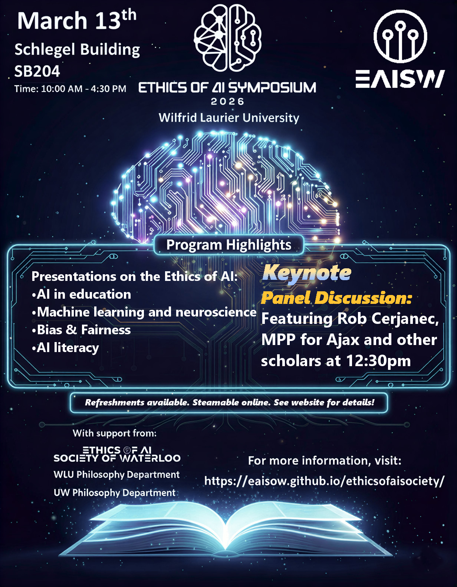

Welcome
The Ethics of AI Society of Waterloo is an interdisciplinary forum dedicated to examining the philosophical, ethical, social, and political implications of artificial intelligence. Our membership includes educators, students, and administrators across three university campuses.
Become a member by joining our Teams group.
Next Meeting: March 20th at 4pm (Location TBA).
See our Teams group for details.
To join our Teams group, email: ethicsofaisocietyofwaterloo@gmail.com
Upcoming Symposium
Our third symposium is scheduled for March 13th at Wilfrid Laurier University from 10:00am to 4:10pm in the Schelegal Building SB204.
Join us for a Keynote Panel discussion.
Meet our panelists.
Support our symposium's GoFundMe.
Meeting Archive
Meeting - March 20, 2026 - Model Validation and Opacity
Meeting - February 27, 2026 - Environment and AI, Trustworthy AI
Meeting - February 13, 2026 - AI and Privacy, AI in Warfare (Guest Report: David Hildebrand)
Meeting - January 30, 2026 - Peircean Epistemology & AI, AI in academics
Meeting - November 25, 2025 - The Ethics of Gen-AI Art (Paper presentation: Matt S.W. Silk)
Meeting - November 11, 2025 - Philosophy of testimony and AI, AGI, Organoids & AI (Guest Presentation: Tim Kenyon)
Meeting - October 28, 2025 - AI in medicine, AI therapy, Adult content
Meeting - October 7, 2025 - AI Literacy (Presentation: Matt S.W. Silk and Ian J. MacDonald)
Meeting - September 17, 2025 - AI in education, AI Psychosis
Meeting - June 13, 2025 - AI Literacy and AI in research
Meeting - March 21, 2025 - AI in education (Academic integrity accusations and inductive risk)
Meeting - March 7, 2025 - Gen-AI art
Meeting - February 14, 2025 - Algorithmic manipulation
Meeting - January 17, 2025 - AI in healthcare
Meeting - November 8, 2024 - Affective computing and workforce surveilance
Meeting - October 11, 2024 - Business and AI, privacy
Meeting - September 20, 2024 - AI in the military
Meeting - March 1, 2024 - AI ethics committees, Law and statistical evidence
Meeting - February 2, 2024 - AI hallucinations and evidence
Meeting - November 16, 2023 - AI Regulation, Deepfakes, AI Music
Meeting - October 26, 2023 - AI Hallucination, Algorithmic Bias, Cognition and Autonomy
Meeting - October 5, 2023 - Inaugural Meeting
Original Ethics of AI Course (PHIL 228) - Winter 2022 - Formation of Ethics of AI Society
Posters
